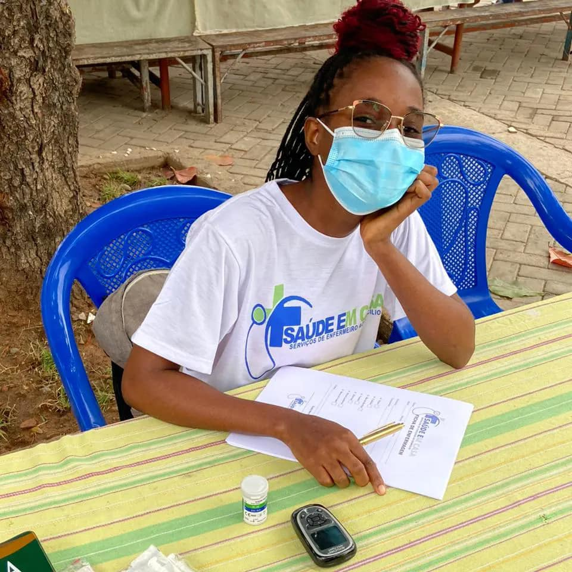
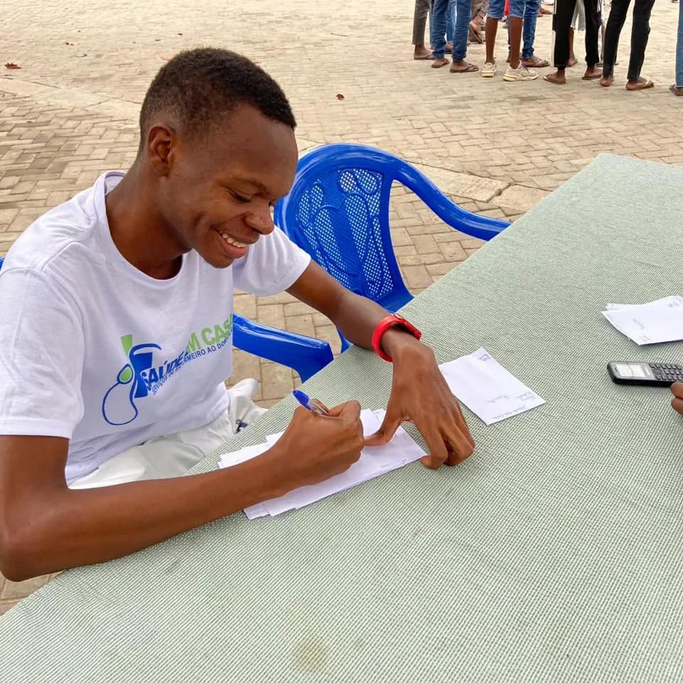

SOBRE NOS
Saude em casa Enfermeiro ao domicílio 👩🏼⚕️👨🏽⚕️
Dispomos, de um serviço de enfermagem ao domicílio, de modo a oferecer uma resposta personalizada e individualizada à pessoa e família.
Qualidades dos nossos Enfemeiros
Para ser uma boa técnica de enfermagem, é necessário possuir uma combinação de habilidades técnicas, conhecimentos práticos e traços pessoais que são fundamentais para fornecer cuidados de qualidade e segurança aos pacientes. Aqui estão alguns aspectos importantes do perfil de uma boa técnica de enfermagem:
- Formação e certificação: Ter uma formação adequada e possuir a certificação como técnica de enfermagem é essencial. Isso inclui concluir com sucesso um curso reconhecido na área e obter a devida licença para exercer a profissão
- Conhecimento técnico: Ter um conhecimento sólido sobre procedimentos e técnicas de enfermagem é fundamental para fornecer cuidados adequados. Isso inclui habilidades de curativos, administração de medicamentos, coleta de amostras, entre outros
- :Empatia e compaixão: Uma boa técnica de enfermagem deve ser empática e compreensiva com os pacientes. Mostrar empatia e cuidado ajuda a construir uma relação de confiança e torna o ambiente hospitalar mais acolhedor.
- Comunicação efetiva: A comunicação clara e eficiente é crucial na enfermagem. Uma boa técnica deve ser capaz de se comunicar de forma adequada com os pacientes, colegas de trabalho e equipe médica
- Organização e gerenciamento do tempo: O ambiente hospitalar pode ser agitado, e é essencial ser organizada e capaz de gerenciar bem o tempo para cumprir as tarefas de forma eficiente
- Habilidade para trabalhar em equipe: A enfermagem é uma profissão colaborativa, e uma boa técnica deve ser capaz de trabalhar em equipe com outros profissionais de saúde para fornecer um atendimento integrado
- Tomada de decisão e resolução de problemas: Em situações de emergência, a técnica de enfermagem precisa tomar decisões rápidas e eficazes. Ter habilidades de resolução de problemas é fundamental para lidar com diversas situações clínicas
- Capacidade de lidar com o estresse: O trabalho na área de saúde pode ser estressante e emocionalmente desafiador. Uma boa técnica de enfermagem deve ser resiliente e capaz de lidar com o estresse de forma saudável.
- Ética profissional: A ética é fundamental na enfermagem, e uma boa técnica deve agir com integridade, respeito e responsabilidade em todas as situações
- Atualização e aprendizado contínuo: A área de saúde está em constante evolução, e uma boa técnica de enfermagem deve buscar aprimorar seus conhecimentos e habilidades por meio de atualizações e aprendizado contínuo
SOBRE 👇
Ella Lopes
Altino
Leandra
Leandra
Ella Lopes
Ella Lopes
Saúde Em Casa
Luanda, Angola
Município do Talatona
Telefone: 943 021 515 / 943 905 799
Email:saudeemcasa66@gmail.com